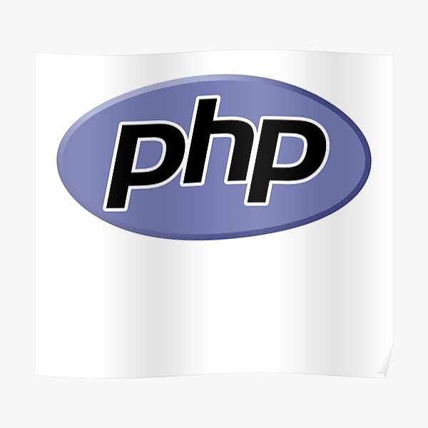

Lenguajes de Programación Populares


Java
James Gosling
Java se ha convertido con el tiempo en una de las plataformas más populares entre los desarrolladores, y en uno de los lenguajes de programación modernos.
Contact

C++
Bjame Stroustrup
Es un lenguaje de programación que proviene de la extensión del lenguaje C para que pudiese manipular objetos.
Contact

Python
Guido Van Rossum
Es un lenguaje de programacion de codigo abierto, orientado a objetos. Es un lenguaje interpretado, por lo que el codigo de programacion se convierte en bytecode.
Contact

Php
Rasmus Lerdorf
Es un lenguaje de programación de código abierto muy utilizado especialmente en el desarrollo de aplicaciones y web, este lenguaje de código puede ser incrustado en HTML5.
Contact